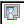
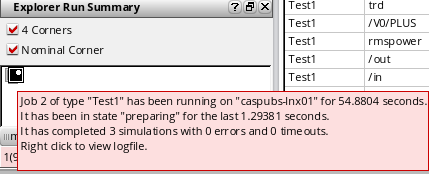
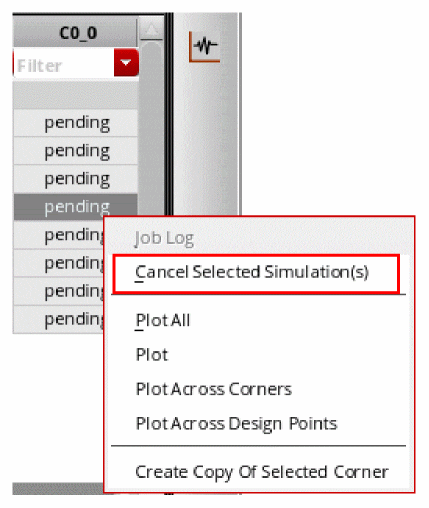
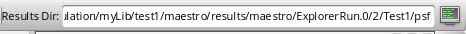

7
Running a Simulation
This chapter describes how to run a simulation that you have set up.
- Prerequisites to Run Simulation
- ADE Explorer Simulation Flow
- Setting up Job Policies
- Starting a Simulation
- Interrupting or Stopping a Simulation
- Debugging Points
Prerequisites to Run Simulation
Before running a simulation, you need to do the following tasks:
- Start the Virtuoso® ADE Explorer and choose a design, simulator, model files, and analyses that you want to run.
- Specify the simulation setup, such as design variables, parameters
- Specify which outputs to save or plot
ADE Explorer Simulation Flow
All simulations running in ADE Explorer are distributed according to the job control method specified in the job policy.
ADE Explorer supports the following two job control modes:
-
LSCS: This is the default job control model.It is a highly scalable job control mode that can handle thousands of netlisting and simulation jobs in parallel. This mode contains three systems: Virtuoso, Netlist Service, and Simulation Service. These systems work independently and concurrently with the shared queues of messages. The workflow being divided into separate processes means that the resources are consumed only when they are needed. Therefore, this model enables a more efficient exchange of information between these distinct processes.
For more details about how to configure setup and run simulation for LSCS mode, refer to Running Simulations with LSCS Job Control Mode. -
ICRP: This uses the IC Remote Processes that are started by ADE Assembler in the
virtuoso -nographmode. These remote processes perform the following tasks:- Generate netlists
- Run simulations
- Evaluate the results
- Return the results to the ADE Assembler user interface
Separate remote processes imply that the above tasks do not block the ADE Assembler user interface and still enable you to continue working when the simulation run is in progress.
An ICRP process may start a few child processes (clsbd, oaFSLockD, cdsNameServer, cdsServIpc) to perform some special tasks. These child processes may become daemon and continue to exist longer than the ICRP process itself. These processes should not be killed when the original ICRP job has exited because new ICRPs that are dependent on these daemon processes may have been started in the intervening time. - For more details about how to configure setup and run simulation for ICRP mode, refer to Running Simulations With ICRP Job Control Mode.
Setting up Job Policies
A job policy specifies the job control mode to be used to run simulations. In addition, it specifies the job distribution method: local, remote, or command; maximum number of jobs to be run at a time; and various job timeout settings.
The default job policy for ADE Explorer is Maestro Default. You can also define a custom job policy, save it with a unique name in the.cadence/jobpolicy directory and set it as default by using the defaultJobPolicy environment variable.
The order in which the job policy files are searched in the .cadence/jobpolicy directory is determined by the Cadence Setup Search File mechanism (CSF). To find this information, CSF uses the setup.loc file, which is an ASCII file that specifies the locations to be searched and the order in which they should be searched. For more information about the setup.loc file or how to edit search order, see
You can set up a job policy to define the distributed processing resources required to run simulations for the test.
To set up a job policy, choose Setup – Job Setup. The Job Policy Setup form appears. In this form, modify the settings to suit your requirements and save the setup with a new policy name.
To use the
By default, the
Setting Up the Default Job Policy
To specify a customized default job policy:
- In the Job Policy Setup Form:
-
Click the Save button next to the Job Policy Name field.
The Save Jobpolicy form is displayed. - In this form, select the path for the job policy.
- Click OK.
-
Set this job policy name as the value for the following variable.
envSetVal( "adexl.icrpStartup" "defaultJobPolicy" 'string "myDefaultJobPolicy")By default, the job control mode is set to LSCS. Set the following variable to specify the default job policy for ICRP job control mode:envSetVal("maestro.distribute" "forceJobControlModeWhenViewOpen" 'cyclic "ICRP")
If you do not specify a job policy, the program applies the following defaults.
- Distribution Method: Local
- Max. Jobs: 1
- Start Timeout: 300 (seconds)
- Linger Time: 300 (seconds)
- Show errors even if retrying test: t
- Optimize Single Point Run: t
- Communication Timeout: 180 (seconds)
- Do not estimate: t
- In the Default Value group box of the Resources tab:
- In the Scale Estimated Values by group box:
Specifying a Job Policy Name
To specify a job policy name, do the following:
-
In the Job Setup form, in the Job Policy Name field, type a name for your job policy.
The job policy name must be alphanumeric with no spaces or special characters.
Optimizing a Single Point Run
By default, the Optimize Single Point Run check box in the Setup section is selected. Therefore, for a single point run, ADE Explorer optimizes the run by completing the netlist generation and expression evaluation tasks inside the ADE Explorer process and running the simulation as per the distribution method specified by the job policy. This saves the overhead of starting a separate process thereby saving the overall processing time.
Important points to note:
- This feature is available only if the specified simulator is Spectre or AMS.
- While the netlist generation for a single point run is being done inside the ADE Explorer process, the user interface becomes unavailable for any changes. Therefore, it is recommended to clear the Optimize Single Point Run check box for designs that require a large time to generate netlist.
- This feature is not supported when:
Specifying a Distribution Method
You can specify a distribution method by using the Distribution Method drop-down list
Depending on your setup, you can choose one of the following methods:
-
Local– The program runs simulations on the local host. -
Remote-Host– The program runs simulations on the remote host that you specify. -
Command– You send a command to the distributed processing software.
On selecting, Command as the distribution method, the Command field is displayed. In this field, specify the command you want to use to start jobs.The command must adhere to these guidelines.
If the specified job distribution method is invalid, ADE Explorer checks whether a default distribution method is returned by the maeGetDefaultDistributionMethod custom SKILL function. You can define this function in the .cdsinit file as shown in the example below.
procedure(maeGetDefaultDistributionMethod()
"Command"
)
Specifying Max Jobs
Max jobs specifies the maximum number of jobs that can run in a ADE Explorer session.
To specify maximum job information, do the following:
- In the Max. Jobs field, type the maximum number of jobs that can run at any time during your ADE Explorer session.
maxIPCJobsLimit environment variable. The default value of this environment variable is 1000. When Start Immediately is turned on, the program immediately submits the specified maximum number of jobs, or one job for every test, whichever is less, when you start ADE Explorer. This means that the defined number of processes are already running before you start the simulation. This saves the overhead of staring processes at time of running simulation.
To turn off this feature, do the following:
Important Points to Note
-
Even if already started, the life of an idle process is controlled by the Linger Time field whose default value is
300second. This implies that if a user launches a simulation 5 minutes after starting ADE Explorer, these processes would have already been killed and would restart when a simulation is run. - In a scenario where the resource requirements change dynamically, it is recommended not to select the Start Immediately check box. The initial process will start based on the previous resource requirement in the job setup, but since the resource requirement change for every new run, the previously started process may not fulfil the new requirements. Hence, the older processes need to be killed and new processes are launched on the machine that meets the resource requirement.
Specifying an LBS Job Policy
ADE Explorer supports the following Distributed Resource Management Systems (DRMS):
|
Load Balancing System – Simple job distribution system ( |
|
- Specify a name for your job policy.
-
In the Distribution Method drop-down list, select LBS.
The check boxes, fields, and list boxes related to specifying queues and hosts appear.
If you have set up the LBS DRMS, the form shows the fields, as shown below:If you have LSF in your cluster setup, theLSFstring is displayed next to the Distribution Method field.If you have OpenLava in your cluster setup, theOpenLavastring is displayed next to the Distribution Method field.
If you have set up the SGE DRMS, the form shows the fields relevant to SGE.
-
(For LSF and OpenLava only) Select the Queue check box and select an available queue from the drop-down list.Your system administrator determines the list of available queues. See “System Administrator Information” in the Virtuoso Analog Distributed Processing Option User Guide for more information.If you do not select the Queue check box, the program uses the default system queue.
-
(For LSF and OpenLava only) Select the Host check box and select an available host from the list area.
If you do not select the Host check box, the host to be used is decided by the DRMS. -
(For LSF and OpenLava only) In the Resource Requirements field, specify any additional resource requirements to submit the job.
The program uses these resource requirements along with the queue/host you specified to start the job. It is up to the load sharing facility software to resolve any conflicts between the queue/host and the resource requirements. - (For LSF and OpenLava only) In the Parallel Num. Processors field, specify the number of parallel processors to be used to run a simulation. To use this value, select the check box given to the right.
- (For LSF and OpenLava only) In the Job Group field, specify the name of the job group to which you need to submit the job.
- (For LSF and OpenLava only) In the Service Class field, specify the name of the service class to which you need to submit the job.
- (For LSF only) Select the Memory Host Limit check box to apply the memory limit set for the selected LSF queue in the configuration file for LSF.
- (For SGE only) In the Hard Resource Req field, specify the resources that must be allocated before a job can be started.
For example, num_proc=4,mem_total=4G.
- (For SGE only) In the Soft Resource Req field, specify the resources that a job needs but that do not have to be allocated before the job can be started. The specified resources will be allocated to the job on an as-available basis.
-
(For SGE only) In the Job Priority field, specify the priority for the job being submitted relative to the other pending jobs submitted by you. The default priority of a submitted job is
0. Users with administrator privileges can set this value from-1023to1024. Other users can set this value from-1023to0.
For example, you can set the priority for a job as-500. - (For SGE only) In the Parallel Environment field, specify the name of the parallel environment.
- (Optional) Specifying Max Jobs.
- (Optional) Specifying Job Timeouts.
- (Optional) Specifying Error Reporting Options.
- (Optional) Specifying Multiple Run Options.
-
Save your job policy.
For more information, see Starting a Simulation. - Click OK.
Specifying Job Timeouts
To specify job timeouts, do the following in the Timeouts group box:
-
In the Start Timeout field, type an integer number of seconds of time to wait for the process to report back to ADE Explorer that it has started the job. The wait time starts as soon as ADE Explorer submits the job.
If the process does not respond in the number of seconds you specify, ADE Explorer considers the job not started and kills it. If there is another job waiting to start, ADE Explorer starts it. -
In the Configure Timeout field, type an integer number of seconds to wait for the process to report back to ADE Explorer that it has configured the job. The wait time starts as soon as ADE Explorer sends the job configure command.
If the process does not respond with a successful configuration message in the number of seconds you specify, ADE Explorer considers the job configuration unsuccessful and kills it. ADE Explorer looks for the next idle job and tries to start and configure it. -
In the Run Timeout field, type an integer number of seconds to wait for the process to report back to ADE Explorer that it has run the job. The wait time starts as soon as ADE Explorer sends the run command for the job.
If the process does not respond that the job has completed in the number of seconds you specify, ADE Explorer considers the job run unsuccessful and kills it. ADE Explorer looks for the next idle job and tries to start, configure, and run it. -
In the Linger Time field, type an integer number of seconds after which you want the program to kill a remote job after the simulations finish.
Specifying Error Reporting Options
To specify error reporting options, do the following in the Error Reporting group box:
-
By default, if multiple error points exist for a test, the program displays only the output log file of the first error point in the test. To view the output log file of the remaining error points, right-click the job status icon on the Run Summary assistant pane.
To cause the program to display the output log files of all error points in the test, select the Show output log on error check box. - To cause the program to display the output log file on the occurrence of an error for a test, even if the ADE Explorer distribution system is retrying the test, select the Show errors even if retrying test check box.
Saving or Deleting a Job Policy
To save a job policy, do the following:
-
In the Job Policy Setup form, click Save.
The Save Job Policy form appears.
-
In the Select Path list, select the directory where you want to save the job policy.
You can save the job policy in one of the following directories in which you have write permissions or in the paths specified in yoursetup.locfile where you have write permissions:-
.cadencedirectory in the current directory -
The
.cadencedirectory in the path specified in theCDS_WORKAREAenvironment variable. -
$HOME/.cadence(the.cadencedirectory in your home directory) -
The
.cadencedirectory in the path specified in theCDS_PROJECTenvironment variable. -
The
.cadencedirectory in the path specified in theCDS_SITEenvironment variable.
-
-
Click OK.
The job policy is saved in thejobpolicydirectory under the selected directory. The job policy file has the.jpextension.
If a job policy file with the same name is found in more than one of the above locations, the first job policy file found in the first of the following locations is used:
-
.cadencedirectory in the current directory -
The
.cadencedirectory in the path specified in theCDS_WORKAREAenvironment variable. -
$HOME/.cadence(the.cadencedirectory in your home directory) -
The
.cadencedirectory in the path specified in theCDS_PROJECTenvironment variable. -
The
.cadencedirectory in the path specified in theCDS_SITEenvironment variable.
To delete a job policy, do the following:
-
Choose Options – Job Setup.
The Job Policy Setup form appears. - From the Job Policy Name drop-down list, select the job policy you want to delete.
Running Simulations With ICRP Job Control Mode
The ICRP job control model uses the IC Remote Processes that are started by ADE Explorer in the virtuoso -nograph mode. These process in turn, may start a few child processes (clsbd, oaFSLockD, cdsNameServer, cdsServIpc) to perform some special tasks.
ADE Explorer internally uses ICRP jobs to efficiently distribute time-consuming tasks that can be performed in parallel. Settings for these jobs such as how many remote processes to start; where the processes should run, on local or remote machines; or the time for which a remote process should stay active and wait for a simulation to run; are set as a job policy.
For more information on managing the ICRP job control mode, see the following topics:
Running Simulations With ICRP Job Control Mode
The ICRP job control model uses the IC Remote Processes that are started by ADE Assembler in the virtuoso -nograph mode. These process in turn, may start a few child processes (clsbd, oaFSLockD, cdsNameServer, cdsServIpc) to perform some special tasks.
ADE Assembler internally uses ICRP jobs to efficiently distribute time-consuming tasks that can be performed in parallel. Settings for these jobs such as how many remote processes to start; where the processes should run, on local or remote machines; or the time for which a remote process should stay active and wait for a simulation to run; are set as a job policy.
For more information on managing the ICRP job control mode, see the following topics:
- Specifying a Job Policy Name
- Optimizing a Single Point Run
- Specifying a Distribution Method
- Specifying Max Jobs
- Specifying an LBS Job Policy
- Specifying Job Timeouts
- Specifying Error Reporting Options
- Saving or Deleting a Job Policy
- Specifying Multiple Run Options
- Setting Up Resource Options
Specifying Multiple Run Options
To specify the job option to be used when running multiple runs in the same ADE Explorer session, do one of the following in the For Multiple Runs group box.
- To cause the program to reassign a completed job for the current run to a new run, select the Reassign immediately for new run option.
- To cause the program to wait until all the jobs for the current run are completed before assigning the jobs to a new run, select the Wait until currently running points complete option.
Setting Up Resource Options
ADE Explorer provides a feature to estimate the memory and CPU resources required to run simulations. After completing the simulation setup, you can use this feature to run resource estimation for the defined test, and ensure that the required memory and CPUs are available on the local or remote computer as defined by the job policy setup.
Shooting on the Choosing Analyses form. This feature is supported by MMSIM 14.1 ISR8 or later releases.By default, the resource estimation feature is disabled. You can enable and configure it using the Resources tab on the Job Policy Setup form shown below.
The following table describes the commands given on the Resources tab.
If this feature is enabled using the options given in the Provide CPU and Memory Data group box, when you run a simulation in ADE Explorer, the resource requirement is estimated. The estimated memory required to run the simulaitons is populated in the Estimate Memory field on the Resources tab of the Job Policy setup form, as shown below.
Before the next simulation run, you can ensure that the required memory is available on the local or remote computer where you plan to run the simulation as per the Distribution Method of the job policy. You can use the template strings %MEM_EST and %CPU_EST to automatically transmit these resource requirements to your subsequent jobs.
When the distribution method is set to
rusage[mem=%MEM_EST:mmsim=4] span[hosts=1]
When the distribution method is set to Command, you can include the %CPU_EST and %MEM_EST template string in the command, as shown below.
bsub -n %CPU_EST -I -q queueName -R \"rusage[mem=%MEM_EST]\" other_bsub_options
During runtime, the %CPU_EST and %MEM_EST template strings are replaced with the estimated values
Suspending and Resuming Simulation Runs
A resource-intensive simulation run might fail when sufficient disk space is not available. In such cases, you can suspend one or all of the running simulations, clean up the disk, and resume those for completion. You do not need to cancel the run.
You can suspend a simulation in the following ways:
Automatically Suspend Simulations When the Disk Space is Low
You can configure the commands to automatically suspend simulations when the disk space is low, and flag appropriate information or warning messages.
To enable checking of disk space and automatic suspension of simulations depending on the configured settings, do this:
- Choose Options – Job Setup to open the Job Policy Setup form.
-
Open the Resources tab, shown below.
-
Specify the following options in the Disk Space group:
-
Show warning for low disk: Select this check box to enable checking of the available disk space when a simulation run is started. ADE Explorer shows a warning in these cases:
- If the available disk space before running simulation for the first point is less than the threshold value specified in the If the remaining disk space is less than _ MB field, a warning message is flagged to report about the unavailability of the required space and to confirm whether the run is to be continued.
-
For the Single Run, Sweeps, or Corners run mode, after the first design point is simulated, the disk space consumed for that point is used to estimate the total space required to run simulations for all the points. If the remaining (available – estimated) disk space falls below the threshold, ADE Explorer shows the following types of messages:
If the remaining (available – estimated) disk space is more than or equal to the threshold specified in the If the remaining disk space is less than field, an information message is flagged to report the same.
If the remaining (available – estimated) disk space is less than or equal to the threshold specified in the If the remaining disk space is less than field, a warning message is flagged to report the same. It is recommended to manually suspend the simulation run for the current history, free up the disk space, and resume the run.
Consider an example of a simulation run for three design points. - The simulation of the first design point used: 15 MB - The estimated disk space for the remaining two points: 30 MB - The available disk space after the first design point is simulated: 115 MB - The threshold value for disk space: 100 MB - The estimated remaining disk space = 115 – 30 = 85 MB, which is less than the threshold value In this scenario, after the simulation for the first design point is complete, a warning message is displayed to clear disk space.
-
Automatically suspend simulations if the disk space is insufficient: Select this check box to enable automatic suspension of all the simulations in progress whenever the available disk space falls below the minimum threshold specified in the Minimum disk space to be maintained (in MB) field.
When automatic suspension is enabled, by default, ADE Explorer checks the disk space after every five simulations. You can change the frequency in the Check disk space after every _ simulations field.
-
Show warning for low disk: Select this check box to enable checking of the available disk space when a simulation run is started. ADE Explorer shows a warning in these cases:
-
Click OK to close the form.
ADE Explorer uses the settings specified on this form to constantly monitor the available and estimated disk space and shows appropriate messages. If a simulation is automatically suspended, the status on the Run Summary tab and the Results tab is updated, as shown below.
In the Explorer Run Summary pane, the icons of the jobs allocated for the suspended simulation run appear as paused ( ). Their tooltips also show the time since when they are in the suspended state.
Manually Suspend Simulations
You can manually suspend the simulation while a simulation run is in progress. To do so, choose Simulation – Suspend.
The current simulation run is suspended and the following status is displayed on the ADE Explorer status bar to indicate that the simulation run is suspended.
To indicate that the simulation is manually suspended for a point, the status of the suspended point on Results tab shows the text, Suspended, as shown in the figure below. In addition, the message highlighted in figure below is displayed in the table header to indicate that the current simulation run has been manually suspended.
To resume a suspended simulation, choose Simulation – Resume. The simulation is resumed from the point where it was suspended previously.
Important Points to Note
- The settings for automatic suspension of jobs can be set only in the global Job Policy Setup form. These settings are not available in the job policy at the test level.
-
You cannot suspend a simulation when the continueICRPRunOnAbruptGUIExit environment variable is set to
t. -
When you suspend a simulation, the status of its points on the Results tab appears as
suspended. - The job policy settings to automatically suspend simulations are ignored while running simulations using OCEAN or SKILL scripts.
-
Starting from MMSIM 15.1 ISR15, Spectre supports the
+disk_check=<threshold value> command-line option to automatically suspend simulations if the disk space is below the given threshold limit. To use this feature of Spectre, specify this option in the User Command-line Options field in the Environment Options form in ADE Explorer. When this option is given and Spectre suspends a simulation, the corresponding ICRP is suspended. If the resources running other the jobs submitted by other ICRPs have enough resources, they continue to run. For more information about Environment Options form, see Setting up Simulator Environment Options.
When the Spectre sessions for all the ICRP jobs in ADE Explorer are suspended, the status of the history tab is changed to suspended and its background color is changed to yellow.
Suspending or Resuming Simulations From a DRMS
When the simulations are running in a DRMS, if you need to preempt any simulation to manage the resources, send the SIGTSTP signal to the ICRP process. The signal is then sent to the Spectre process spawned by that ICRP to suspend the simulation and release the license. To retrieve the license and resume simulation, send the SIGCONT signal to that ICRP process.
When suspended, Spectre will release the license only if it is called with the +lsuspend option. If +lsuspend is not used, Spectre will suspend the simulation, but the license will not be released.
Troubleshooting jobs that stay pending until Timeout
Certain jobs may stay pending until timeout because a Message Passing System (MPS) communication cannot be established between the ICRP and GUI processes.
Any one of the following reasons can cause this gap in communication:
- There may be a firewall blocking the TCP/IP communication between machines.
-
ADE may have started a large number of jobs and does not have the sufficient time frame to respond back to all jobs. This causes the communication timeout to fail.
-
The cdsNameServer versions may be incompatible. If the machine initially ran a 5141 (or a version prior to 6.1.3) cdsNameServer then any attempt to establish connection using a cdsNameServer version later than 6.1.3 would fail.The cdsNameServer program is used to establish communications between Cadence programs. It relies upon the TCP port number, 7325. In addition, whenever needed, the cdsNameServer program starts automatically and exits itself after being idle. To know more, see Cadence Application Infrastructure User Guide.
Important points to note about MPS:
-
When virtuoso is running on the GUI_Host, a cdsNameServer process should be running on the GUI_Host listening to port 7325. This can be ensured by:
GUI_Host% mpsinfo -c
-
This listener port must also be accessible from the Remote_host. This can be confirmed by:
Remote_Host% mpsinfo GUI_Host -c
- Access to port 7325 from remote hosts is necessary, but insufficient for the ADE flow. There are other ports which are allocated from the ephemeral range on the GUI_Host that must be accessible from remote hosts.
- Ephemeral ports are generally determined by the OS. For example, ephemeral ports have the range from 32768 to 61000 for Linux.
-
When virtuoso is running on the GUI_Host, a cdsNameServer process should be running on the GUI_Host listening to port 7325. This can be ensured by:
These ports (7325 and ephemeral ports) need to be opened up for both the GUI host and the remote host, in case these are blocked by a firewall.
Starting a Simulation
After you specified the required settings, perform the following steps to start a simulation:
-
Choose Simulation – Netlist and Run.
The netlist will reflect any design changes. Any edits done in the design or the properties form would reflect in the new netlist. You should use this option when you run the simulation for the first time and also when you have edited your design. Using this option ensures that your design, the ADE setup and the output netlist for simulation are synchronized. - Choose Simulation – Run.
-
Click the
button on the Run toolbar.
Using these options, the design is not netlisted if a netlist is already available. This option is faster than the Simulation – Netlist and Run option, and is useful when no design changes have been made. The resulting simulation reflects simulation setup modifications such as analysis setup changes, design variable changes, and simulator option changes.
When a simulation is running, the status bar at the bottom of the ADE Explorer window shows the different stages of simulation run. The right-most corner of the progress bar appears on the bottom right of the ADE Explorer window displays the results directory, which isExplorerRun.0by default and the library, cell, and view information.
When the simulation is multi-point, a progress bar 'Running now’ on each row of the nominal column is displayed along with the progress bar at the bottom. When the progress bar at the bottom shows1/4, it indicates that one point is run out of total 4 design points.
A progress symbol (  ) appears on the Explorer Run Summary assistant. When you mouse hover this symbol, the simulation run status appears in a tooltip, as shown in the figure below:

When the simulation run is complete, it shows the completion status, as shown in the figure below:

In addition, the simulation status is displayed in the status bar of the ADE Explorer window, as shown in the figure below:
When you modify the design in Schematic editor and run the simulation without saving the design updates, a warning message appears that informs about the unsaved design changes and asks whether you want to continue with the simulation run.
Simulation RunTime Improvements
The following enhancements show significant in simulation runtime.
Performance Enhancements Using Spectre Plugin
To reduce the performance overhead of creating the complete netlist for every simulation point and the associated Spectre startup time, a Spectre plugin has been introduced in this release. ADE Explorer creates an initial netlist for the first design point and sends it to Spectre. Spectre reuses this netlist for all the design points and makes only variable changes for which the plugin sends the details to Spectre.
If netlist recreation and Spectre startup time is comparable to simulation time, then significant performance improvement can be noticed when the new Spectre plugin is used. However, the performance improvement may diminish when the simulation run time is high.
Viewing Netlist
To view or create the netlist for a design point during the simulation run, right-click in a cell in the results table and select one of the options in the View Netlist menu:
- View Initial Netlist—Opens the initial nelist generated when the first design point is simulated.
-
View Variable Changes—Opens the
spectre_change.logfile that displays the variables changed for the current point with respect to the previous point. This file also show a log of which variables are used at which point. -
Create Netlist for this Point—Creates netlist for the selected point only.
Viewing Output Log
Spectre plugin maintains a single output log named Spectre.out for all the points. To view the output log for a data point, right-click in a cell on the Results tab and choose Output Log.
.s\\d+p and .snp files in the Spectre.log file opens the S-parameter data in the Results Browser workspace in ViVA XL. You can then choose the waveforms you want to plot.Limitations
The Spectre plugin is not supported and is automatically switched off for the following features:
- Multi-technology Simulations
- Checks and Asserts
- Simulators other than Spectre
- Monte Carlo
- Statistical corner
- Troubleshoot run
- Design variables of type string
- Device parameters of type string
- Include analysis
- +xps command line option is set
- Spice outputs
- Model file sections using VAR()
- EM/IR
- DSPF files used in the parasitic aware design flow
Performance Enhancements by Simulating Group of Points
Prior to this release, ADE Explorer used to send one point at a time to ICRPs. To improve the performance of simulation throughput and the responsiveness of the user interface, ADE Explorer now sends a group of points to each ICRP.
Group run reduces the overhead of multiple interactions of the user interface with the ICRPs. In addition, when combined with the redistribution feature that automatically reallocates simulations waiting on slow resources to other resources, it helps improve the overall runtime. To enable redistribution, set the minGroupSizeSplitAcrossIdleJobs .cdsenv variable to the count after which redistribution should take place. By default, this variable is set to 0.
For example, when you set this variable to 20, if an ICRP has 20 or more simulations and meanwhile there are some idle ICRPs, they are redistributed to other available ICRPs.
Consider another example where all ICRPs have completed their simulations, but 5 simulations are still pending on one ICRP, which is a slow resource. In this case:
- Redistribution helps if ADE Explorer takes away those 5 simulations and assigns them to 5 faster resources.
- Redistribution does not help if one or more of the resources receiving these new simulations are equally slow.
- Redistribution helps to a great extent if each simulation takes a few hours, and the slow resource with 5 simulations has become the bottleneck for the entire run to complete, and, there are other resources that are available.
However, the amount of improvement depends on the following factors:
- Number of points being run
- Long simulations (if simulation runtime is large, then other improvements may appear non-significant)
- Overall quality of the farm
- Amount of load on farm machines
- Number of max jobs
Interrupting or Stopping a Simulation
- Choose Simulation – Stop.
- On the Run toolbar, click the stop button ( ).
-
Right-click the progress icon on the Explorer Run Summary assistant and click Stop and Resubmit. The following message appears:
The simulation is stopped and system saves any simulation results that are calculated. The stopped simulation cannot be continued.
You can then modify the settings in the Setup and restart the simulation.
Important Point to Note
- Instead of stopping the entire simulation run, you can stop the simulation for only selected tests or points. For more details, refer to Canceling Simulations for Selected Corners.
Canceling Simulations for Selected Corners
To cancel a simulation for one or more corners, do the following:
-
In the Detail view of the Results tab, select one or more result points in the corner columns for which you do not want to run the simulation.
 -
Right-click one of the selected points and choose Cancel Selected Simulation(s).
ADE Explorer cancels the simulation for the points corresponding to the selected cells and completes the remaining simulations. The status of the simulations that you stopped appears ascanceled, as shown below.
Important Points to Note
-
To cancel simulations for all the corners in a test, hold down the
Shiftkey and select all the corners in a row for that test, right-click and choose Cancel Selected Simulation(s). If there are multiple design points, all the corner simulations for only that design point and test combination will be canceled. -
Canceled simulations are considered to be specification failures, so the Pass/Fail column shows the
Failstatus for any output specification that contains canceled points. - When you plot an output across corners, the canceled corners for which results were not generated are not shown in the plot.
-
You can cancel simulations for the selected corners in the Detail - Transpose view as well. For this, do the following:
-
To cancel simulations for one or more corners across all the tests, in the left pane of the view, click to select the rows for the corners, right-click and choose Cancel Selected Simulations(s).Simulations for the corresponding design point and corner combinations are canceled across all the tests.
- To cancel simulations for specific design point, and corner, select the corresponding cells in the right pane of this view, right-click and choose Cancel Selected Simulations(s).
-
To cancel simulations for one or more corners across all the tests, in the left pane of the view, click to select the rows for the corners, right-click and choose Cancel Selected Simulations(s).
Viewing Run Preview
The Run Preview tab provides a summary of all the settings applied in the current ADE Explorer view. You can view various details, such as the total number of sweep points and corners that are run, the name of the test, or the job policy being used. It also displays the combinations of sweeps and corners that will be run. You can view a particular data point in the debug environment and run a simulation for that point. In addition, you can create netlist for a particular point. On this tab, you can also select specific points for which you want to run simulations. By default, this tab is not displayed.
The default display setting of this tab is controlled by the outputTabsShowDefault environment variable.

The Run Preview tab has two sections—Setup Summary and points table, as shown in the figure below. The design point and corner combinations, and the values of variables are displayed in the points table. You can also enable or disable run points in the points table. For more information, see Enabling or Disabling Run Points in Points Table.
You can click Disable Point Selection on the upper-right corner to show or hide the Setup Summary section. To find a specific point or set of points in the points table, you can sort the data displayed in each column by clicking the arrow button available on the column headers. If required, you can also view specific data points by using the filters available in each column header.
Refreshing the Setup Summary and Points Table
As you modify the setup in the current view, the setup summary is refreshed automatically and the count of corners, points, and total simulations to be run keeps varying. By default, only the summary data is displayed and updated. This is because the Auto Refresh Setup Summary check box in the drop-down menu is selected by default. You can click the Refresh button to display the details of the run points in points table.

When you open a new setup or move from ADE Explorer to ADE Assembler and vice-versa, the points table is not displayed by default. You need to click the Refresh button to view the points table. In addition, the points table is not automatically refreshed and becomes unavailable when the setup changes. In this case, an alert icon is displayed on the Refresh button to indicate that the table data is not current. You can click the Refresh button to update the table contents.
To refresh the points table automatically after every change in the sweep values, corner, or any other setup changes:
-
Set the enableAutoRefreshPointsTable .cdsenv variable to
t. - Click the Refresh drop-down list and select the Auto Refresh Points Table option.
If the number of the simulation points is large, it may take several minutes to display the details.
To refresh only the points table and not the Setup Summary, you can clear the Auto Refresh Setup Summary check box and select the Auto Refresh Points Table check box.
Related Environment Variables
Enabling or Disabling Run Points in Points Table
The points table shows a Run column that includes a check box against each row. By default, the check box is selected for all the points. The Run column is used to select or deselect run points for the simulation run.
If you do not want to run a specific point, you can do one of the following to disable the point:
- Clear the check box in the Run column
-
Right-click the point and choose Set Point Disabled For Run. You can choose Set Point Enable For Run to enable a specific point.
The selected point is disabled.
To enable or disable a set of points:
-
Hold down the
Ctrlkey and select the points, right-click and choose Set Point Enable For Run or Set Point Disabled For Run, respectively.
Enabling or Disabling Run Column
To completely disable the Run column and run point selection,
-
Click the
 button.
button.
The Run column becomes unavailable. In this case, all the points will be run irrespective of the selection you made previously. To enable the Run column, click this button again.
Detail and Detail-Transpose views display disabled in the disabled sweep-corner cell, as shown in the figure below.The completely disabled rows and columns are not displayed in the results.
Some Important Points to Note:
- The run point selection is not displayed when Reliability analysis is enabled. In addiiton, it currently works for only single run sweeps and corners.
- Measurements across corners, sweeps, all will ignore the disabled run points.
-
By default, the columns for fixed parameters are not displayed in the points table on Run Preview tab. However, if the fixed parameters are enabled in the Results tab for the
Detail - Transposeview, they will be displayed in the points table as well. To display columns for fixed parameters on Results tab, you can choose the Fixed Parameters option in the Configure what is shown in the table drop-down list available on the toolbar. - The run point selection is reset and the points table is disabled when you transition between ADE Explorer to ADE Assembler and vice-versa.
- The run point selection is not considered in Saved Ocean XL scripts.
- Any setup changes in the variables, parameters or corners will reset the check boxes in Run column and select all of them.
- The run point selection setup is persistent and is saved and loaded along with view.
Using the Information Displayed on the Run Preview Tab
You can use the information displayed on the Run Preview tab, as explained below.
Viewing the Corner and Sweep Combinations
If you have selected the check boxes that enable automatic refresh of information, the details on the Run Preview tab show the updated corner and point details while you modify the ADE Explorer setup.
Modifying the Setup
You can click a hyperlink provided in the Setup Summary section to open the relevant section in the ADE Explorer setup and modify the settings. For example, when you click the Corner hyperlink, the Corner Setup form is displayed where you can modify the corners for the current setup. After you close the Corners Setup form, the number of corners is updated according to the changes.
Similarly, you can click the Job Policy hyperlink to open the Job Policy form to view or modify the job policy. If the test has an overridden job policy, the Job Policy information in the Setup Summary indicates that by using a keyword (various).
Creating Netlist
You can create a netlist for a specific design point and corner combination and verify the details. To do this, right-click anywhere in the row corresponding to that combination and choose Create Netlist. ADE Explorer creates and displays a netlist for that point in a separate window.
Running a Simulation for a Specific Point
Before running a simulation for all the points, you might be interested in viewing the results of a specific design point and corner combination. In that case, you can run a simulation for only that combination and verify results. If required, make further modifications in the setup. To run a simulation for a specific design point and corner combination, right-click anywhere in the row corresponding to that combination and choose Open Debug Environment. ADE Explorer opens that simulation point in the ADE Debug Simulation Environment where you can run a simulation and view the results.
Modifying the Format of the Run Preview Tab
The format of information displayed on the Run Preview tab is defined by the previewSetup.xsl stylesheet saved at the following default location:
<Virtuoso-installation-directory>/share/cdssetup/adexl/previewSetup.xsl
To modify this format or to define the content to be displayed on this tab, you can provide the path to a customized .xsl stylesheet by setting the RUNPREVIEW shell environment variable before running Virtuoso, as shown below.
setenv RUNPREVIEW_XSL <path-to-cutomized-stylesheet-file.xsl>
ADE Explorer uses the stylesheet specified by this variable to display the information on the Run Preview tab.
Setting the Debugging Options
You can set debugging options that help you troubleshoot several problems that you face while working with ADE Explorer, such as non-responsive user-interface, ICRPs not starting, simulations showing error or warning messages, and so on. When set, these debug options are instantly applied on all the active ICRPs, however, the current simulation run remains unaffected.
Perform the following steps to set the debugging options:
-
Choose Tools – Debug.
The Debug Utility form appears.
-
In this form, specify the following fields to set the debugging options:
-
Enable verbose logging in job logs and CDS log—Select this check box to enable the debugging options listed below:
- Write the debug information and prepend a time-stamp in each debug message
- Write the callback evaluation information
- Capture the full stack trace if an error is thrown
- Write the Monte Carlo debug information
- Write the calcVal debug information
- Write the debug information for wave spec evaluation or re-evaluation
- Print the DE integration debug information and log all SKILL_CALLS issued by the UI
- Report information during runObjFile and interactive plotting operations
- Write the OCEAN debug information
When you click this check box, the following environment variables are enabled to write the std out and std error messages to the CDS.log file:
"adexl.icrpStartup" "showJobStdout" 'boolean t
"adexl.icrpStartup" "showJobStderr" 'boolean t -
Job Log Directory—Specify a location where you want to redirect the job logs. This field is useful when you select the Enable verbose logging in job logs and CDS log field and want to write the job log files to a different location so that they can be shared for further debugging.
Alternatively, you can set the location using the following environment variable:
“adexl.distribute” “jobFileDir” ‘string “<myDir>”\ - GUI Process ID—Show the GUI process ID.
- Host Name—Show the host name of the machine on which you are running Virtuoso.
-
Options specifying how to proceed in case of failures—Set the following fields to specify how you want to proceed when failures are found:
-
Confirm to proceed when job launch failure counts exceeds—Specify a count after which if a job launch is failed, an error message is displayed.
For example, if you specify this field value as3, then if the job fails three times, no error message is displayed. However, if the job continues to fail for the fourth time, an error message is displayed in CIW. This indicates that the number of attempts permitted to retry a job launch in the given case is three.
Alternatively, you can set the following environment variable to specify how many number of times to retry a job launch before reporting the error:
"adexl.distribute" "maxJobFailPerPolicy" 'int 1000 -
Halt batch processing when job log failure count exceeds—Specify a count after which if a job has failed to launch, the batch processing is stopped. The value you specify is applied to all the scripts generated from the current session.
Alternatively, you can set the following environment variable to specify how many number of times a job launch can be retried before stopping the batch processing of jobs:
"adexl.distribute" "maxJobFailPerPolicyInBatch" 'int 1000 -
Maximum number of attempts to resubmit a failed simulation—Specify how many times ADE Explorer can try resubmitting a failed simulation. By default, ADE Explorer resubmits a failed simulation only once, and if the simulation fails again, an error message is displayed.
Alternatively, you can set the following environment variable to specify the maximum number of attempts to resubmit a failed simulation:
envSetVal(“adexl.distribute” “numRetriesOnError” ‘int 2) - Click OK to apply the specified settings.
-
Confirm to proceed when job launch failure counts exceeds—Specify a count after which if a job launch is failed, an error message is displayed.
- Click OK to apply the specified settings.
-
Enable verbose logging in job logs and CDS log—Select this check box to enable the debugging options listed below:
Important Points to Note
- The debug options settings specified in this form will be applied on all the jobs (ICRP sessions) that are new or waiting to run a simulation. To apply these changes on the currently running jobs as well, restart the jobs by right-clicking the ICRP icon in the Run Summary assistant and choosing Stop and Resubmit.
- The default values displayed for the debug options in this form are the values specified for them in the related environment variables.
-
The debug options settings specified in this form temporarily override the specified
.cdsenvor.cdsinitsettings. The form settings are applicable only to the current Virtuoso and ICRP sessions, and form fields will show the default values in the next sessions.
Debugging Points
After you run simulations in ADE Explorer, if any particular data point fails or shows undesired results, you can selectively change the setup of that data point and debug it. For this, you can use the ADE Explorer Debug Environment.
You can use the ADE Explorer Debug environment to load the setup of a data point you want to debug. The entire setup for the data point selected in ADE Explorer including the test, variables, and analyses details, corners, outputs, simulation settings, and job policy gets loaded. You can modify the settings for debugging purpose and perform all the tasks that you can perform in ADE Explorer such as running simulations and plotting results, except the following tasks:
- Changing the simulator or simulation run mode
- Changing the switch view list
- Running parametric analysis
After debugging the data point, you can bring back the corrected simulation setup to the ADE Explorer view. You can then run the simulation by using the updated setup in the ADE Explorer view.
To debug a data point by using the debug environment, do the following:
-
On the Results tab, right-click the data point and choose Open Debug Environment.
The ADE Explorer Debug Environment window appears displaying the setup for the data point. For example, the following figure displays the setup for cornerC0_1of testTest1at data point1in history item ExplorerRun.0.
Note the following:-
The ADE Explorer Debug Environment window title bar displays the test name, history item name, corner name and design point ID for the selected point. For example, the title bar in the above figure displays the point information as:
Test1, ExplorerRun.0, Corner-C0_0, Design Point-1
Where,Test1is the test name, ExplorerRun.0 is the history item name,C0_1is the corner name and 3 is the design point number for the selected point. -
The Design Variables pane displays the value of the design variables at the selected data point. The Type column indicates the type of the variables, as described below:
Type Description Global variable or device parameter with sweep (multiple) values
-
The default project directory for the data point is the
/results/data/historyName/pointID/testName/debugdirectory of the ADE Explorer view. -
You can see the path of the results directory for the data point in the ADE Result Directory toolbar. By default, this toolbar is hidden. You can right-click any toolbar and choose ADE Result Directory to make it visible.Click XTerm to open the terminal window from where you can access the
netlistorpsfdirectories for the data point. - The relevant job policy settings set up in the ADE Explorer environment are copied to the debug environment.
- You cannot use the debug environment to debug results from OCEAN-based tests.
-
Any existing
.cdsinitvariables set by the user (for example, the variables to set the simulation directory or the host run mode) are applicable to the debug environment.
-
The ADE Explorer Debug Environment window title bar displays the test name, history item name, corner name and design point ID for the selected point. For example, the title bar in the above figure displays the point information as:
- Modify the setup for the data point as required and run simulations to debug the data point.
-
Choose Session – Setup Back To ADEXL and click Yes in the message box that appears to bring the corrected setup back to the ADE XL view.
If you click Yes, ADE Explorer overwrites the active setup with the setup information in the history item for which you debugged the data point. For example, if you debug a data point in a history item namedExplorerRun.0, ADE Explorer overwrites the active setup with the setup information inExplorerRun.0. Then, the changes in the debug environment setup are merged with the active setup as described below:- Changes in design variables, analyses and outputs for a test in the debug environment are merged with the setup in the ADE Explorer view.
- Changes in scalar variables (global variables or device parameters with single value) in the debug environment overwrite the value of the corresponding global variables and device parameters in the ADE Explorer view.
- Changes in sweep variables (global variables or device parameters with sweep values) in the debug environment are appended to the sweep range for the corresponding global variables and design parameters in the ADE Explorer view.
- Changes in corner values in the debug environment result in a new corner being created in the ADE Explorer view.
For example, if you choose Session – Setup Back To ADE Explorer after making the following changes in the debug environment, as shown in the figure:-
Modified the value of the scalar variable
wpfrom104uto110u -
Modified the value of the corner variable
vplusfrom2.2to3 -
Modified the value of the Temperature variable for the corner from
27to100.
Important Point to Note
It is important to note the following point while working in the debug environment:
- If you try to open a debug environment for a point while this environment is already open for another point, the set up of the previous point is replaced with the new point. However, if a simulation is already running for the previous point, the following confirmation message is displayed. Click No to continue with the simulation already running.
Click Yes to stop the simulation that is already running. The simulation running from the debug environment is stopped and the partial simulation results are plotted. In addition, the setup details of the new debug point overwrite the setup of the previous data point.

Return to top